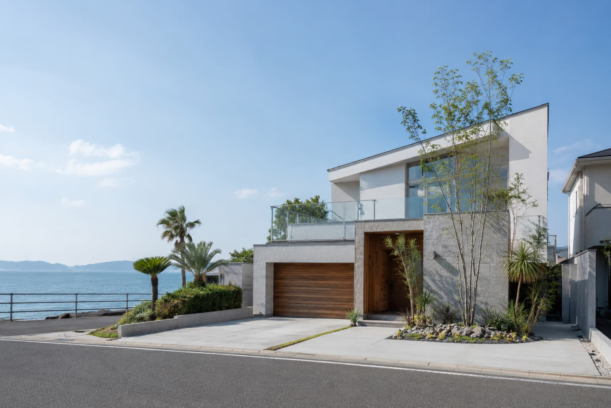
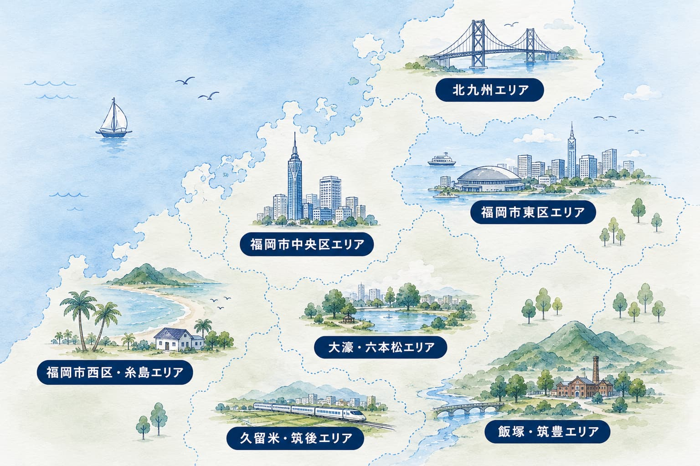
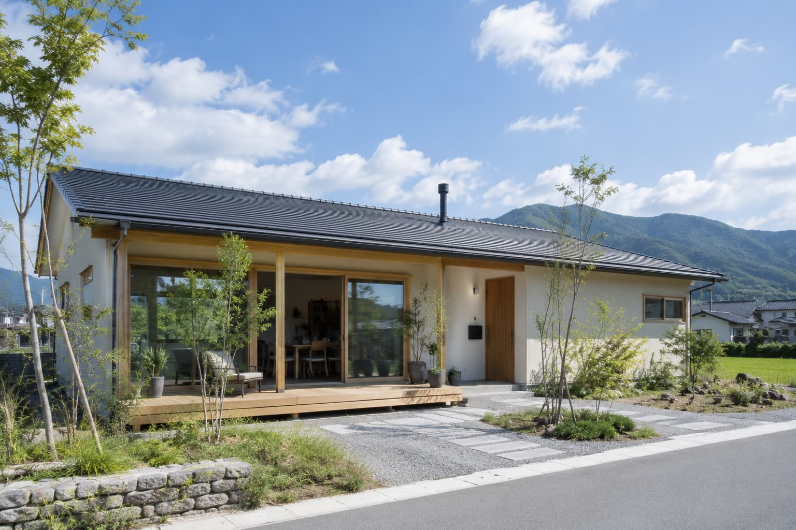
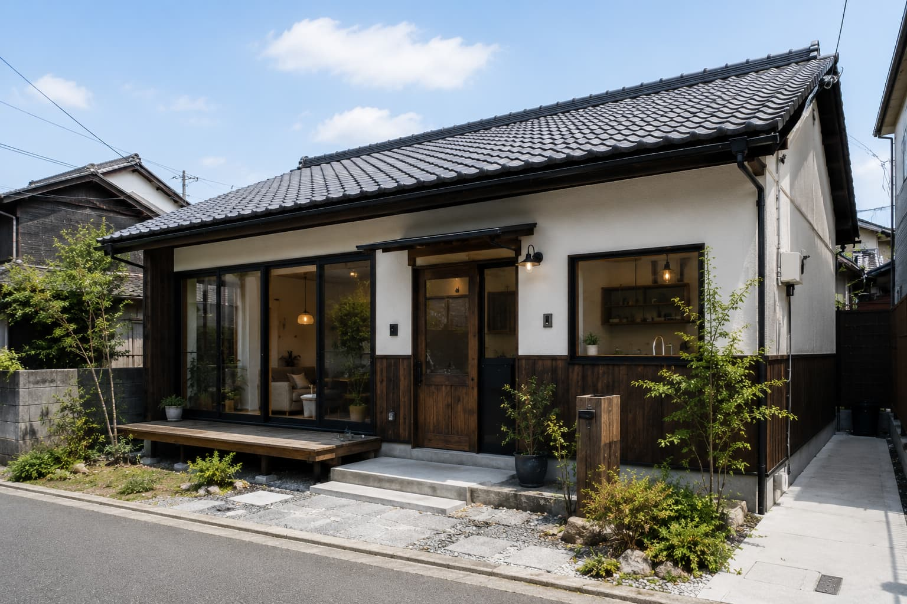

売買福岡市地域
海まで徒歩3分のデザイナーズハウス
3,980万円

福岡市地域・北九州地域・筑後地域・筑豊地域で、
住む人の
ライフスタイルに合った
住まいをご提案します。
通勤、休日、家族、仕事、趣味。
何気ない毎日に寄り添い、
これからの暮らしを一緒に考える
不動産会社です。
物件を紹介するだけでなく、
暮らし方・資金計画・将来の使い方まで
一緒に整理します。
一人暮らしからファミリーまで、
エリアや通勤動線、初期費用も含めて
暮らしに合う賃貸物件をご提案します。
マンション・戸建て・土地の購入から売却まで、資金計画や将来の暮らし方を見据えて伴走します。
週末利用、二拠点生活、将来的な民泊運用まで、使い方から逆算して物件選びを整えます。
中古物件の購入前から、間取り・内装・工事費の考え方まで、自分らしい住まいづくりをサポートします。

売買福岡市地域
3,980万円
 賃貸
賃貸
福岡市地域
12.8万円/月

売買筑後地域
3,980万円

賃貸筑豊地域
110,000円
地域ごとの情報に精通したスタッフが、
住み心地まで見据えて提案します。
忙しい方でも気軽に相談できるよう、
スピーディーに対応します。
間取りや価格だけでなく、
休日や通勤
まで含めて考えます。
入居前後の手続きや不安にも、
親身に寄り添います。
代表取締役 / 宅地建物取引士
福岡育ち。地域の魅力をたくさん伝えます。
賃貸コンサルタント
丁寧なヒアリングで、ぴったりの物件をご提案します。
売買コンサルタント
住まいの購入を安心して進められるようサポートします。
リノベーションプランナー
中古物件の可能性を、暮らしに合う形に整えます。
01
フォームやLINEからお気軽にご相談ください。
02
希望条件や暮らし方を丁寧に伺います。
03
福岡県内から条件に合う物件をご提案します。
04
気になる物件を実際にご見学いただきます。
05
必要な手続きを分かりやすくご案内します。
06
鍵のお渡しから入居後までサポートします。
賃貸の場合は家賃の4〜6か月分が目安です。
物件や契約条件により変わるため、候補物件ごとに分かりやすくお伝えします。
可能です。LINE、メール、ビデオ通話など、ご都合に合わせた方法でご相談いただけます。
はい。犬・猫の種類や頭数、暮らし方に合わせて、条件に合う物件をご提案します。
県外からの移住相談も歓迎しています。
エリアの特徴や生活環境も含めてご案内します。
もちろんです。毎月の支払い、将来の住み替え、ライフスタイルを比較しながら一緒に整理します。
対応しています。査定、売却時期、住み替え先探しまで、状況に合わせて無理のない流れをご提案します。
条件をお伺いしたうえで、公開前の情報や掲載しきれていない候補も含めてご提案します。
はい。物件価格だけでなく、工事費や入居までのスケジュールも含めて現実的に検討できます。